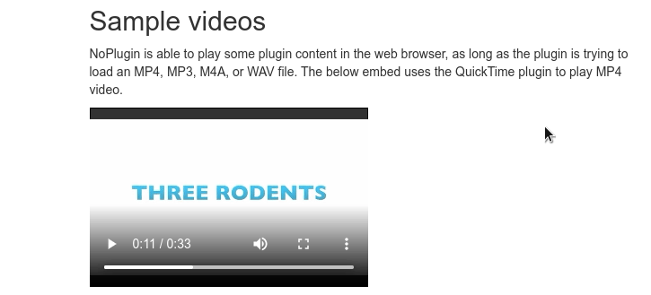
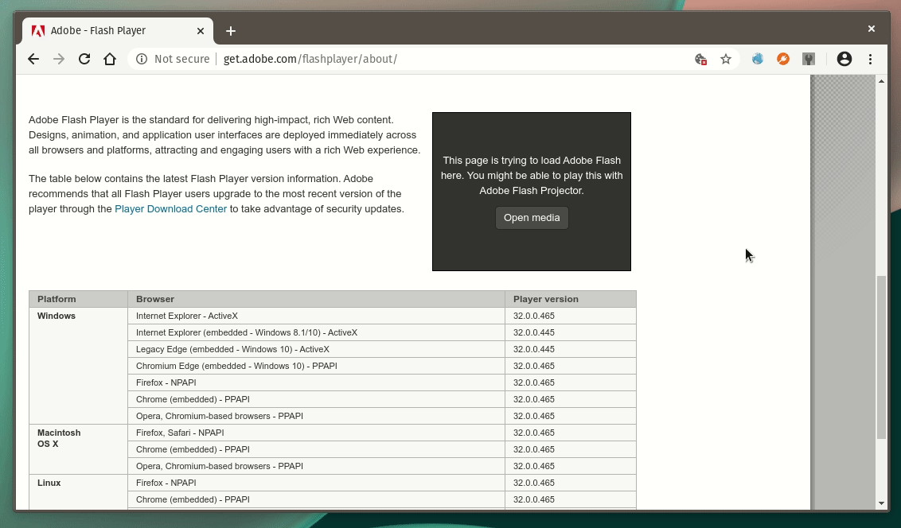
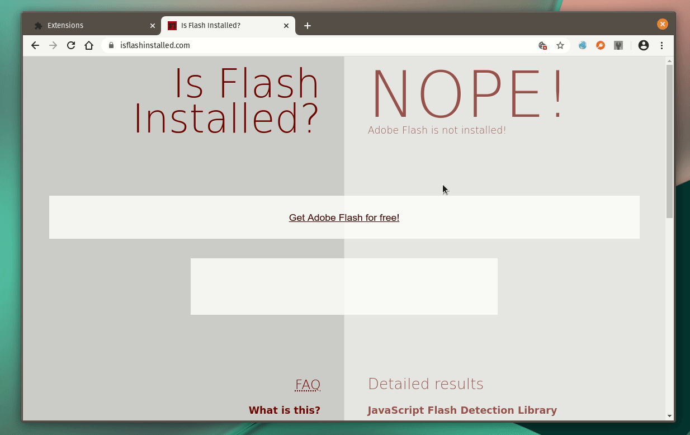

I’ve been developing a browser extension called NoPlugin for a few years now. It acts as a compatibility layer for modern browsers, allowing content from many plugin embeds (Adobe Flash, QuickTime, Windows Media Player, etc.) to be viewed without said plugins. In recent updates, it has added support for upgrading old Flash players for popular video sites (like Twitch, YouTube, and Vimeo) to their newer HTML5 versions.
NoPlugin 7.0 is now rolling out to Chrome, Firefox, and Opera, and it’s a big update. It includes many of the features I’ve wanted to implement for years, along with some much-needed design updates.
Previously, NoPlugin would add a giant yellow banner to the top of webpages where it detected plugin objects, with easy buttons for reporting bugs and viewing the help document. It was modeled after the banner that Chrome used to add when it detected an unsupported plugin. However, it sometimes cut off content on the webpage (and wasted space), so it’s finally going away.
In NoPlugin 7.0, hovering over a media object that NoPlugin replaced will now show a tooltip message with the same controls. It looks much better, and still gives you the same options for reporting bugs.

NoPlugin 7.0 also no longer shows a popup when a media file has been downloaded, with buttons to install VLC Media Player. The code was becoming difficult to maintain (Chrome, Opera, and Firefox all have varying support for the look and functionality in notifications), so now when a file can’t be played in-browser, it will just download with the same popup that your browser uses for all downloads.
NoPlugin can’t play Adobe Flash content directly in the browser, it can only replace the object with an HTML5 equivelent wherever possible (e.g. converting an old Flash-style Vimeo embed to the newer HTML5 version) or walk you through opening the content in the separate Adobe Flash Projector application. Starting with NoPlugin 7.0, when you click one of the buttons to download Flash Projector, the proper version for your platform will be automatically downloaded from a mirror on the Internet Archive.

This will keep the functionality working in the event Adobe removes Projector from its website after Dec 31st, 2020 (the EOL date for all Flash software).
One of the long-standing issues with NoPlugin is that it had no way around webpages that detected if certain plugins were installed using JavaScript. If a site wouldn’t show plugin content because it (correctly) checked the plugin wasn’t available, NoPlugin had nothing on the page to replace. This is finally being addressed with a new compatibility mode.
NoPlugin 7.0 adds a new menu option when you right click a page for toggling the compatibility mode. When enabled, NoPlugin replaces a few variables in the browser’s “navigator” object to simulate various plugins being installed.

It’s not a 100% fix, since some detection libraries relied on loading actual Flash objects instead of just checking the browser’s own plugin lists, but it does work on many pages.
NoPlugin 7.0 is about as feature-complete as I think the extension will ever get, but I will likely release a few smaller updates over the next few months. NoPlugin 7.0 updates its analytics code to send me the file names of Flash media it can’t detect, which could allow me to add translation codes for more types of embeds. I won’t know for sure until v7.0 rolls out to a large enough amount of people.
Beyond that, NoPlugin will likely have to be updated to the new Manifest V3 extension format sometime in 2021. I’m not anticipating any issues there, but it will require some rewrites.